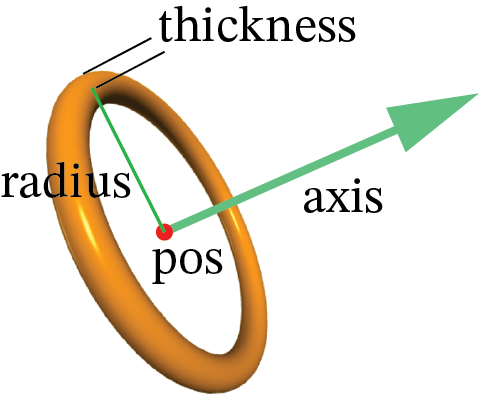
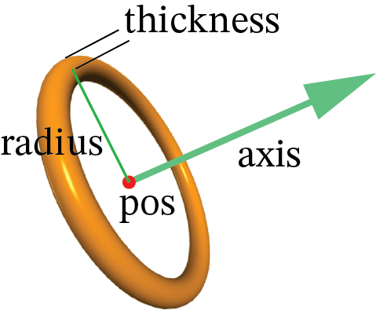

ring¶
 

{kind=link}
- ring(pos=vec(0, 0, 0), axis=vec(1, 0, 0), radius = 2, thickness = 0.2. color=color.cyan)¶
- Parameters:
pos (vector) – Default <0,0,0>.
color (vector) – Default color.white
axis (vector) – Perpendicular to plane of ring. Default <1,0,0>.
radius (scalar) – Radius of the ring. Default 1.
thickness (scalar) – Half the diameter of the cross section of the ring. Default 0.1*radius.
size (vector) – Size of a box surrounding the object. Default <0.2, 2,2, 2.2>.
The pos of a ring is at its center. The axis of a ring determines only the orientation of the ring; the magnitude of axis is ignored. The default size of a ring is unusual: <0.2, 2, 2>. The outer radius is radius+thickness, and the inner radius is radius-thickness.
Setting radius or thickness overrides size. Size is < length, height, width>. To make the ring oval, specify size with different height and width.
Attributes used less often:
- ring(opacity=0.5, shininess=0.2, texture=textures.wood, make_trail=True, canvas=mycanvas, emissive=False)
- Parameters:
opacity (scalar) – Default 1.0; Range 0-1.
shininess (scalar) – Default 0.6; Range 0-1.
emissive (boolean) – Default False. Object glows, losing all shading, if True.
texture (class element or path) – Default None.
visible (boolean) – If False, object is not displayed. Default: True
canvas (object) – Default is
scene.make_trail (boolean) – If True, object leaves a trail when moved. See Attaching a Trail for more options.
up (vector) – A vector perpendicular to the axis.
group (object) – The group to which this object belongs.